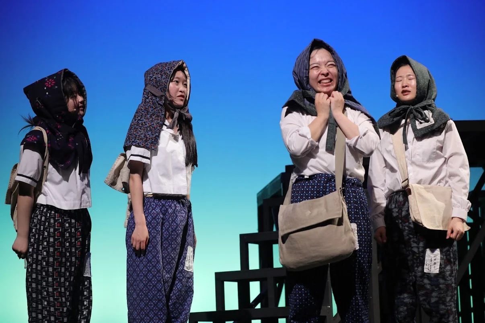
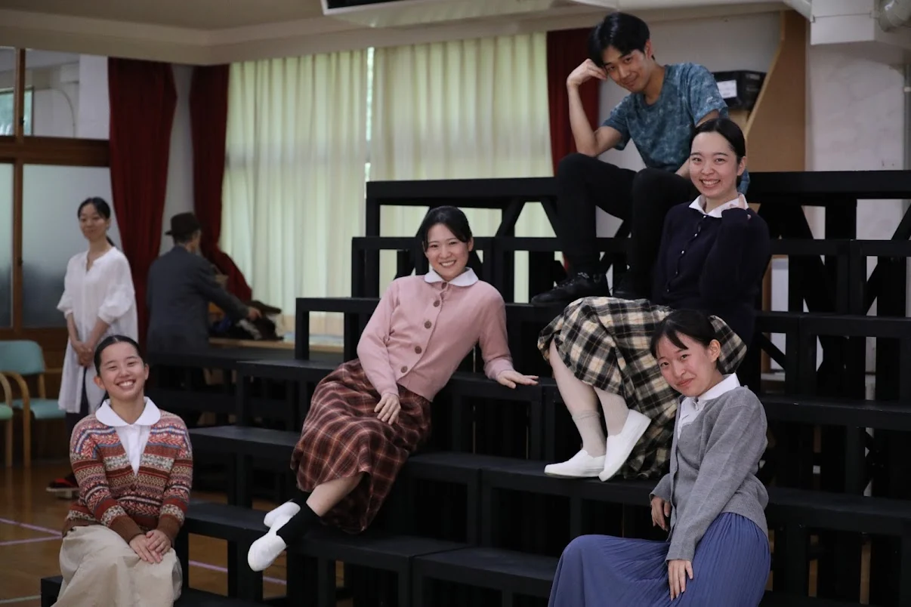
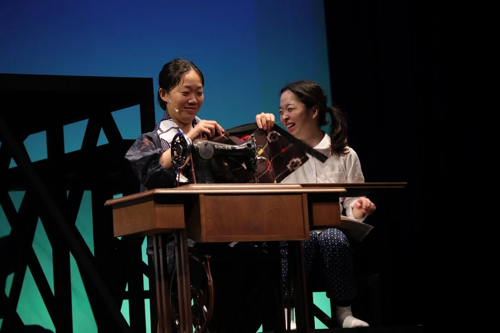
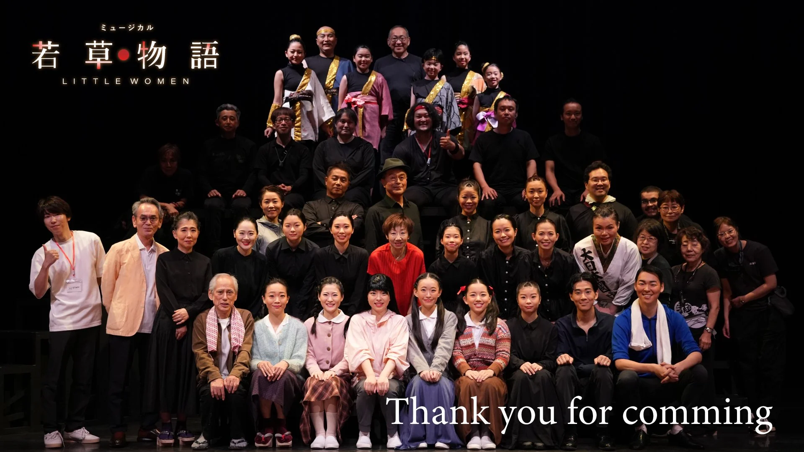
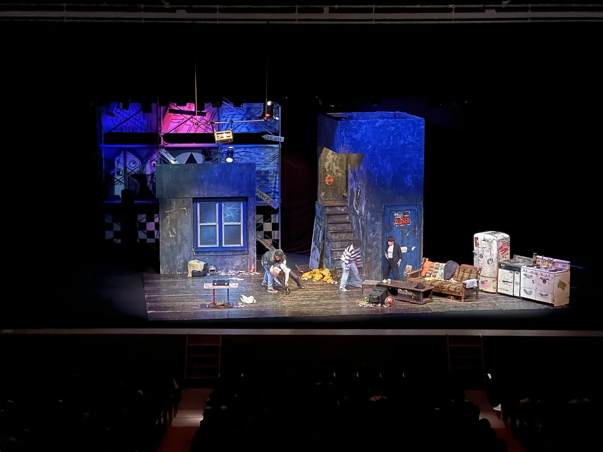
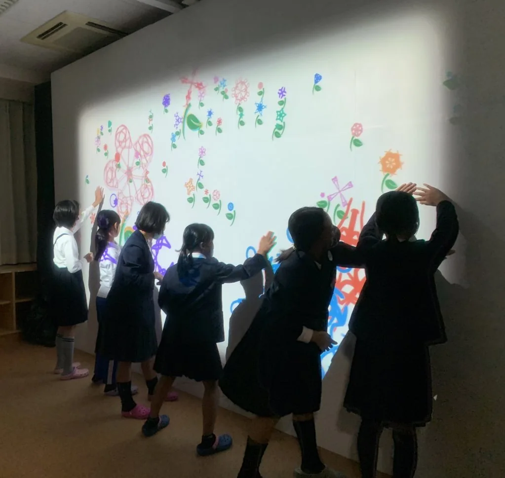
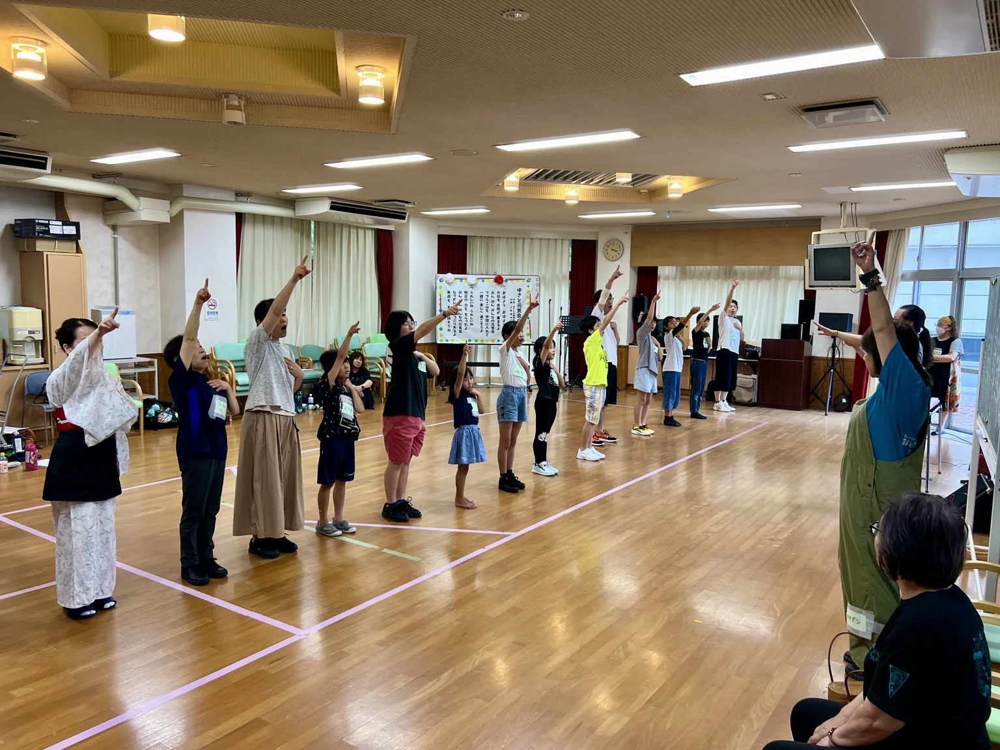
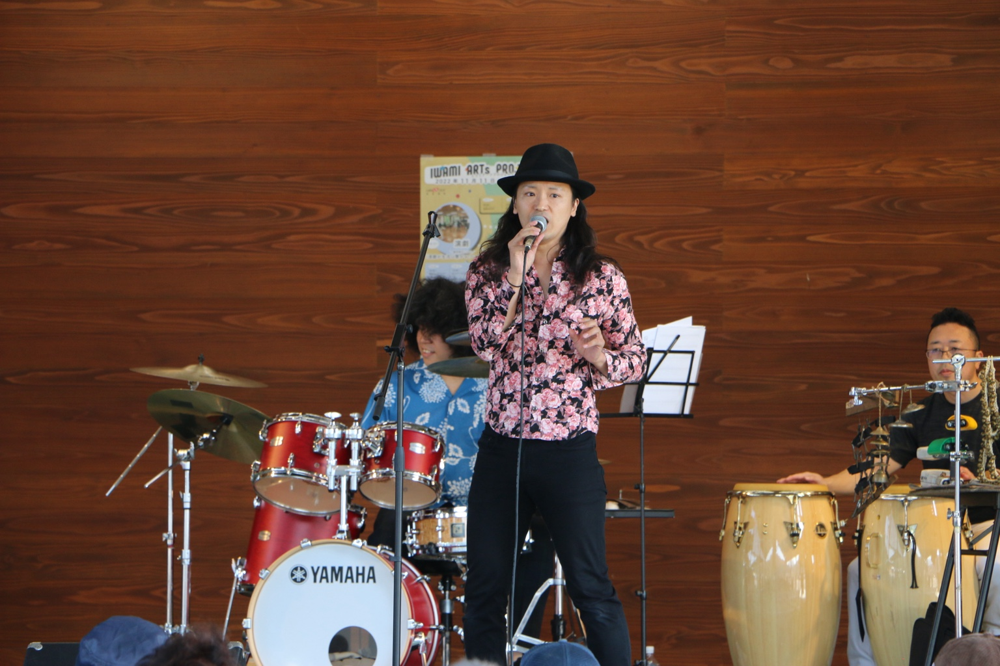
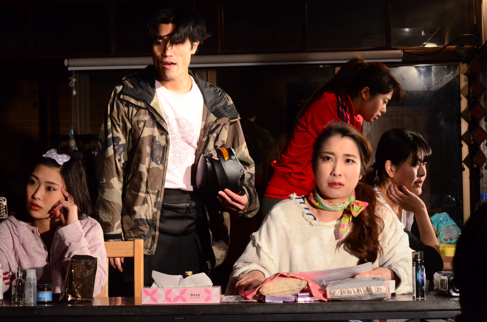

ART / COMMUNITY / CULTURE
石見から世界へ。
世界から石見へ。
From Iwami to the World,
From the World to Iwami.
芸術とともに、地域に生きる。
誰もが表現できる場所を、この土地から。
01 / WHO WE ARE
芸術で、
この土地の
未来をひらく。
IWAMI ARTS PROJECTは、島根県西部・石見地方を拠点に、人と人が芸術を通してつながる場をつくるプロジェクトです。
地元の人々と第一線で活躍する芸術家が、ともに舞台をつくる。子どもたちが夢中になれる表現の機会をつくる。地域に息づく文化を、世界の表現者とつなぐ。私たちは、芸術を特別な誰かのものではなく、みんなの日常の一部にしたいと考えています。
団体についてもっと知る ↗

OUR PEOPLE / THE CREATIVE TEAM
この舞台を、
ともにつくる人たち.
地域と世界を行き来する表現者が、
石見の次の文化を育てています。
02 / FEATURED PRODUCTION
いま、届けたい舞台.
地域とプロフェッショナルが
ともにつくり上げた、ひとつの物語。

2026 / 『若草物語』終演記念写真MUSICAL · LITTLE WOMEN
ミュージカル
『若草物語』
戦時下の日本を舞台に、四姉妹の成長と家族の絆、そして平和への願いを描いた作品。県内外から集まった出演者と舞台芸術家が約5か月の創作を重ね、島根・大田市で上演しました。
- 上演日
- 2026年8月22日・23日
- 会場
- 島根県立男女共同参画センター「あすてらす」ホール
- 作 / 演出
- 福田善之 / 越光照文
03 / WHAT WE DO
私たちの取り組み.
「つくる」「育てる」「つなぐ」。
芸術の可能性を、地域の隅々まで。
ARCHIVE / HIGHLIGHTS
活動の記録をたどる.
公演・演劇教室・芸術祭・教育活動。
実際の写真とともに、活動をご紹介します。
ミュージカル『若草物語』
写真と記録を見る ↗演劇教室
写真と記録を見る ↗温泉津・総合芸術祭
写真と記録を見る ↗
文化芸術による子供育成推進事業
写真と記録を見る ↗
デジタルアート体験
写真と記録を見る ↗
ワークショップ・芸術体験
写真と記録を見る ↗まげまげレボリューション
番組の放送・配信情報を見る ↗
IWAMI ARTS PROJECT 2022
写真と活動記録を見る ↗
劇団晴天『共演者』
第1回の記録を見る ↗04 / NEXT CHAPTER
NEXT PROJECT / 構想中石見から、
国境の向こうへ。
日韓共同制作 音楽劇
『ロミオとジュリエット』
日本と韓国の若い表現者が、ひとつの舞台をともにつくる。対話と創作を通じて、文化の違いを知り、人としてつながる。次の国際共同制作を構想しています。
※ 企画構想段階です。公演日程・会場・募集内容は未定です。国際交流の歩み：代表のSCOT海外公演、日中韓共同制作への出演、2026年の青年芸術訪中団などの経験を次の企画へつなげています。
これまでの交流実績と構想を詳しく見る ↗共同制作・協働のご相談 ↗LOCAL MEDIA / NEW PROJECT
2027年1月 / 放送・配信開始決定石見の毎日に、
ちょんぼし革命。
まげまげ
レボリューション
「食べて、しゃべって、やってみんさい。」地元の一軒家を舞台に、料理・雑談・チャレンジを届ける約15分の地域発バラエティ番組を企画しています。芸術と暮らしをつなぎ、石見の人や日常の面白さを発信します。
2027年1月 放送・配信開始決定。
2027年1月からケーブルテレビなどで放送、YouTubeなどで配信を開始することが決定しました。
※ 放送・配信の具体的な日時・チャンネル等は決まり次第お知らせします。
05 / MOMENTS & STORIES
活動の風景.
2021〜2026年の実際の公演・講座・芸術祭の写真を活動別に紹介します。
2021〜2026年の公演、演劇教室、芸術祭、デジタルアートの活動記録。『あいと地球と競売人』の写真は専用紹介ページにのみ掲載しています。
活動の記録をもっと見る ↗MEET OUR OFFICIAL CHARACTER
石見から、
こんにちは！
石見神楽に登場する「大蛇（オロチ）」をモチーフにした、IWAMI ARTS PROJECT公式キャラクター「タツノコくん」。
いろんな表情で、アートのある毎日をちょっぴり楽しく彩ります。
OUR BELIEF / 私たちの思い
文化は、
身体に宿る。
※「文化は身体に宿る」は、演出家・鈴木忠志の言葉です。
受け継がれてきた土地の記憶を、いまを生きる私たちの表現へ。
その一歩が、次の世代への希望になる。
08 / BE PART OF IT
舞台の向こうで、
あなたと出会いたい。
出演したい、学びたい、応援したい。
経験の有無や関わり方を問わず、芸術に参加する道があります。
09 / CONTACT US
ともに、
次の舞台へ。
出演・参加・協働・取材など、どうぞお気軽にご連絡ください。
06 / FOLLOW OUR JOURNEY
石見の「いま」を、
SNSで.
稽古場の空気、舞台が生まれる瞬間、
地域で出会った人たちのこと。
本番だけでは伝わらない、創作のプロセスも。公演情報、ワークショップのご案内、日々の活動は公式SNSでも発信しています。
OFFICIAL SOCIAL MEDIAInstagram @iwami_arts
実際の公演写真をご紹介しています。Instagramの最新投稿とは自動連動していません。
Instagramで写真・投稿を見る ↗X @ARTS_IWAMI
舞台の情報も、日々の出来事も。
新しい投稿はXの公式タイムラインからご覧ください。活動の最新ニュースをお届けします。
Xの投稿をこのページ内でも表示できます。読み込みはボタンを押したときだけ行われます。
Xの埋め込みが表示されない場合は 公式アカウントへ移動 ↗ してください。
※ Instagramの投稿は、公式プロフィールへのリンクでご案内しています。投稿一覧の自動同期には、Instagram側の認証や専用サービス等の設定が必要です。X埋め込みはブラウザ設定により表示されない場合があります。